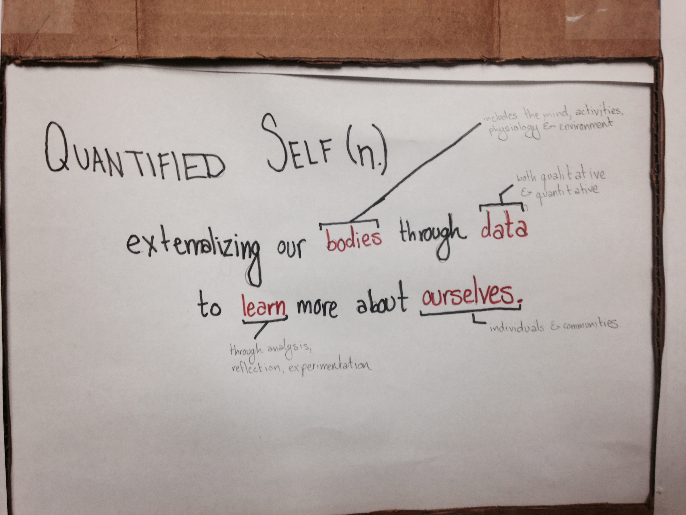

The Quantified Self
2 Words
ONE BIG IDEA!
Slide 2
QUANTIFIED SELF (n.)
externalizing our bodies through data to learn more about ourselves
bodies = includes the mind, activities, physiology, environment
data = both qualitative and quantitative
learn = through analysis, reflection, and experimentation
ourselves = individuals and communities

Slide 3
Slide 5
Slide 6
Slide 7

Andrew Lambert
Age: 25
Height: 178cm

Ashwini Sriram
Age: 25
Height: 167cm

Ricky Holtz
Age: 23
Height: 188cm
Slide 9
HEADER omg lol wtf bbq lasers pew pew

Slide 11
Slide 12
Slide 13
Slide 14
Slide 15
Slide 16